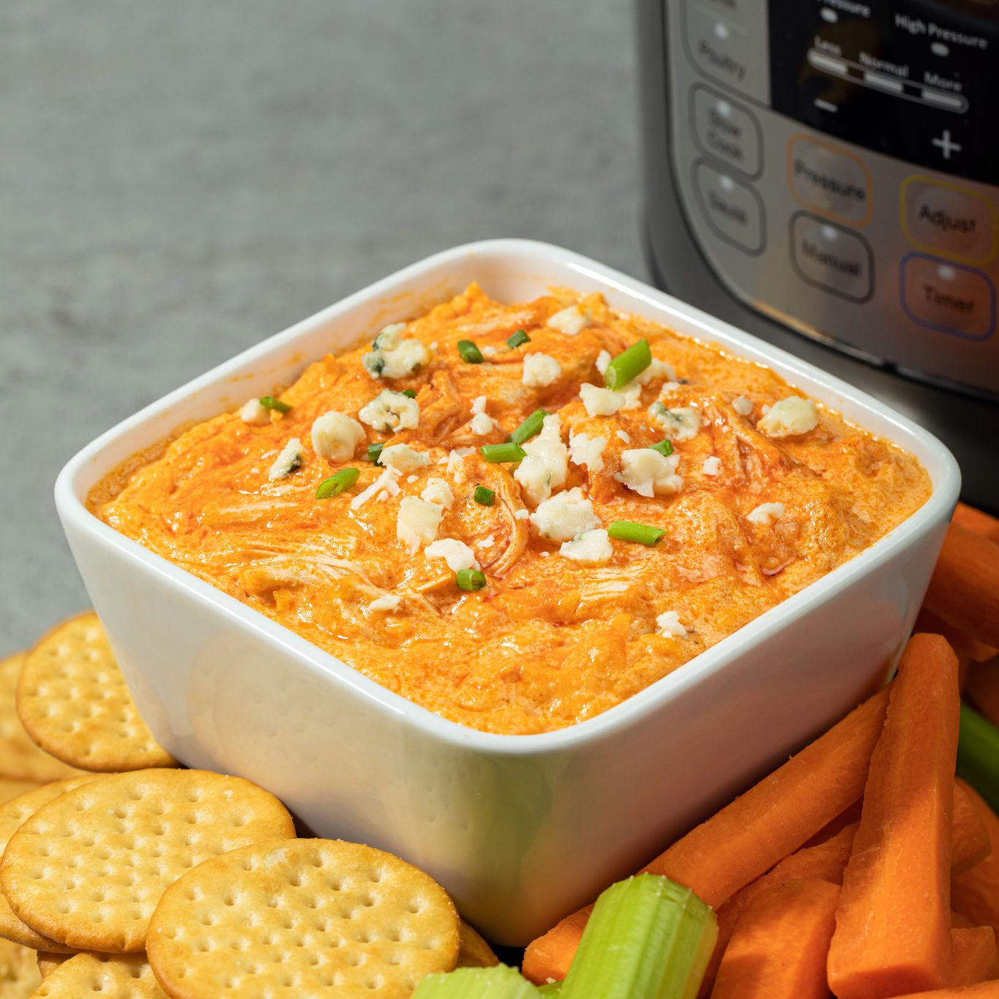

Buffalo Chicken Dip

Instant Pot Buffalo Chicken Dip
Game day eats gotta include Buffalo Chicken Dip. Prepped in your Instant Pot® this version is ready to serve in just 20 minutes. It’s creamy, cheesy, loaded with chunks of chicken, and of course that signature Frank’s RedHot® Original Hot Sauce flavor!
Ingredients
- 1 pound boneless skinless chicken breasts
- 1/2 cup Frank's RedHot® Original Cayenne Pepper Hot Sauce
- 1/2 cup ranch dressing
- 1 package (8 ounces) cream cheese, softened
- 1 cup shredded Cheddar cheese
Steps
- PLACE chicken breast in instant pot. Mix RedHot Sauce and ranch; pour over chicken. Close lid. Set Valve to Seal.
- SET to cook for 15 minutes on MEAT/STEW function. When done, quick-release the pressure. Open the lid once pressure inside the pot is completely released. (Check manufacturer’s manual for safe operating directions.) Remove chicken and shred.
- ADD cream cheese and shredded Cheddar to sauce in pot; stir until cheese is melted and mixture is smooth. Return shredded chicken to pot, stirring to mix well.
- TOP with blue cheese crumbles and green onion, if desired. Serve with crackers, tortilla chips and/or veggie sticks.